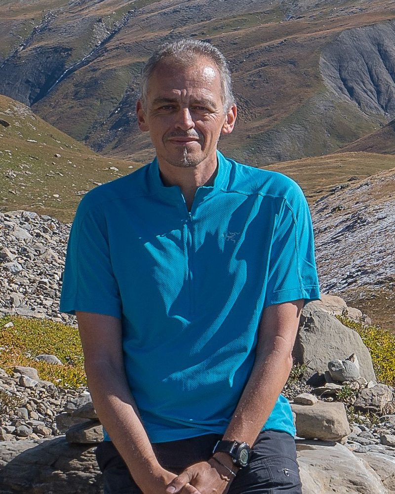
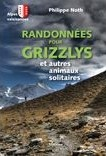
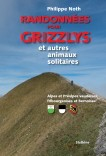

DE Ihre Texte gelangen ins Französische. Unterwegs geht nichts verloren.
EN Your words cross into French. Nothing gets lost on the way.
Vos textes passent en français. Rien ne se perd en chemin.
Philippe Noth, traducteur indépendant à Guttet, en Valais. Je traduis et révise de l’allemand et de l’anglais vers le français de Suisse ou de France.
Services
Je travaille pour des clients directs et pour des agences de traduction, ponctuellement ou sur la durée.
-
Traduction
Je traduis vos textes de l’allemand et de l’anglais vers le français : sites web, logiciels, magazines, documentation, communication d’entreprise. Le but reste le même : un texte qui se lit comme s’il avait été écrit directement en français.
Allemand français Anglais français
-
Révision et relecture
Révision bilingue : je compare la traduction à l’original et je vérifie le sens, la terminologie et la cohérence. Relecture monolingue : je corrige l’orthographe, la grammaire et la typographie du texte français.
-
Post-édition
Un texte prétraduit par une machine reste une ébauche. Je le reprends segment par segment, jusqu’à ce qu’il soit juste, cohérent et agréable à lire.
-
Interprétariat
Si vous êtes en Suisse, je me déplace pour faciliter les échanges entre personnes de langue française, allemande et italienne. Je comprends et parle ces trois langues nationales, en plus de l’anglais.
Français de Suisse ou français de France ?
Un même texte allemand ne donne pas la même traduction à Lausanne et à Lyon. Je localise vos textes pour la Suisse romande ou pour la France, selon vos lecteurs.
| Allemand texte source | Français de Suisse fr-CH | Français de France fr-FR |
|---|---|---|
| Aktion: 3 für 2 | Action : 3 pour 2 | Promotion : 3 pour 2 |
| Siebzig Franken pro Nacht | Septante francs la nuit | Soixante-dix francs la nuit |
| Postfach 55 | Case postale 55 | Boîte postale 55 |
| CHF 1’250.50 | CHF 1’250.50 | 1 250,50 CHF |
| Rufen Sie uns auf dem Handy an. | Appelez-nous sur le natel. | Appelez-nous sur le portable. |
Domaines
Des sujets que je connais de l’intérieur, pour y avoir travaillé ou pour en avoir écrit.
- Informatique et logiciels
- Ingénieur informaticien, j’ai travaillé plus de vingt ans comme développeur sur un vaste projet informatique. Je traduis, post-édite et contrôle des contenus techniques pour de grandes entreprises informatiques et pour l’une des plus grandes agences de traduction au monde.
- Tourisme
- J’ai travaillé avec Saas-Fee Tourismus sur son magazine de destination 4545.
- Commerce de détail
- Traductions quotidiennes de l’allemand vers le français pour un grand détaillant européen. D’autres enseignes me confient aussi leurs textes.
- Montagne et plein air
- Auteur de deux guides de randonnée parus aux Éditions Slatkine, je connais le vocabulaire du terrain, de la carte et du sentier.
- Bénévolat
- Pour Translators without Borders, j’ai traduit des documents sur les défis du café équitable.

Parcours
Je m’appelle Philippe Noth. Ingénieur informaticien parlant quatre langues, j’ai travaillé plus de vingt ans comme développeur sur un vaste projet informatique. J’ai mis cette expérience au service d’une seconde carrière : traducteur et réviseur indépendant, sous le nom de Valais Traductions.
J’ai aussi écrit deux guides de randonnée, parus aux Éditions Slatkine à Genève. Ils décrivent des itinéraires solitaires dans les Alpes suisses, avec le souci d’un texte agréable à lire.
Enfin, j’ai longtemps tenu le Bêtisier du Web, une collection de traductions involontairement comiques trouvées sur Internet. Il revit ici : ouvrir le bêtisier.
Mon CV est disponible sur demande. Vous me trouvez aussi sur ProZ.com, sur LinkedIn et sur noth.ch.
-

Randonnées pour grizzlys et autres animaux solitaires Alpes valaisannes, 2013
-

Randonnées pour grizzlys et autres animaux solitaires Alpes et Préalpes vaudoises, fribourgeoises et bernoises, 2017
Bêtisier
Les machines traduisent mieux qu’autrefois, mais elles ont encore leurs jours sans. Quelques perles tirées de mes archives.
Contact
Vous cherchez un linguiste flexible et méticuleux pour un projet de traduction ? Vous souhaitez localiser un texte pour le marché suisse, ou vous assurer qu’un texte déjà traduit ne contient ni erreur ni incohérence ? Écrivez-moi pour connaître mes tarifs et mes disponibilités.
Valais TraductionsPhilippe Noth
Dorf Guttet 55
3956 Guttet, Suisse
+41 79 305 53 50